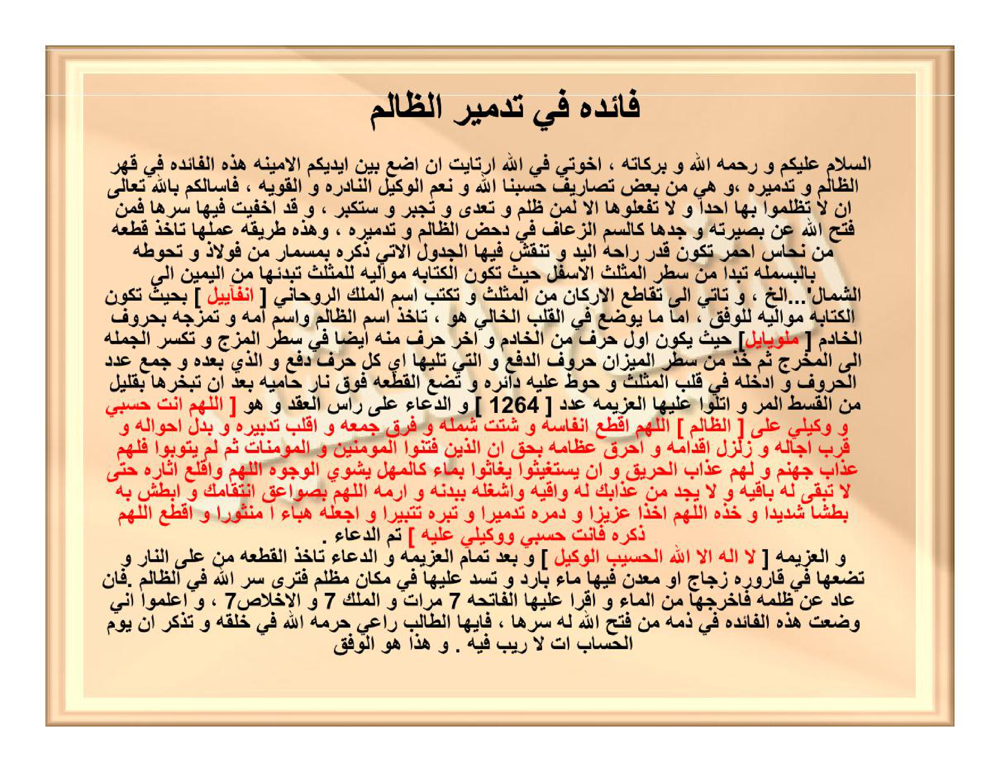

HALAMAN 19 — FĀIDAH FĪ TADMĪR ADH-DHĀLIM — فَائِدَةٌ فِي تَدْمِيرِ الظَّالِمِ
arab
فَائِدَةٌ فِي تَدْمِيرِ الظَّالِمِ
اَلسَّلَامُ عَلَيْكُمْ وَرَحْمَةُ اللهِ وَبَرَكَاتُهُ، إِخْوَتِي فِي اللهِ، ارْتَأَيْتُ أَنْ أَضَعَ بَيْنَ أَيْدِيكُمُ الْأَمِينَةِ هَذِهِ الْفَائِدَةَ فِي قَهْرِ الظَّالِمِ وَتَدْمِيرِهِ، وَهِيَ مِنْ بَعْضِ تَصَارِيفِ [حَسْبُنَا اللهُ وَنِعْمَ الْوَكِيلُ] النَّادِرَةِ وَالْقَوِيَّةِ، فَأَسْأَلُكُمْ بِاللهِ تَعَالَى أَنْ لَا تَظْلِمُوا بِهَا أَحَدًا، وَلَا تَفْعَلُوهَا إِلَّا لِمَنْ ظَلَمَ وَتَعَدَّى وَتَجَبَّرَ وَاسْتَكْبَرَ، وَقَدْ أَخْفَيْتُ فِيهَا سِرَّهَا، فَمَنْ فَتَحَ اللهُ عَنْ بَصِيرَتِهِ وَجَدَهَا كَالسُّمِّ الزُّعَافِ فِي دَحْضِ الظَّالِمِ وَتَدْمِيرِهِ، وَهَذِهِ طَرِيقَةُ عَمَلِهَا: تَأْخُذُ قِطْعَةً مِنْ نُحَاسٍ أَحْمَرَ تَكُونُ قَدْرَ رَاحَةِ الْيَدِ، وَتَنْقُشُ فِيهَا الْجَدْوَلَ الْآتِيَ ذِكْرُهُ بِمِسْمَارٍ مِنْ فُولَاذٍ، وَتُحَوِّطُهُ بِالْبَسْمَلَةِ تَبْدَأُ مِنْ سَطْرِ الْمُثَلَّثِ الْأَسْفَلِ حَيْثُ تَكُونُ الْكِتَابَةُ مُوَالِيَةً لِلْمُثَلَّثِ تَبْدَؤُهَا مِنَ الْيَمِينِ إِلَى الشِّمَالِ... إِلَخْ، وَتَأْتِي إِلَى تَقَاطُعِ الْأَرْكَانِ مِنَ الْمُثَلَّثِ وَتَكْتُبُ اسْمَ الْمَلِكِ الرُّوحَانِيِّ [أَنْفَايِيلَ] بِحَيْثُ تَكُونُ الْكِتَابَةُ مُوَالِيَةً لِلْوَفْقِ، أَمَّا مَا يُوضَعُ فِي الْقَلْبِ الْخَالِي فَهُوَ: تَأْخُذُ اسْمَ الظَّالِمِ وَاسْمَ أُمِّهِ وَتَمْزُجُهُ بِحُرُوفِ الْخَادِمِ [مَلُوبَايِيلَ] حَيْثُ يَكُونُ أَوَّلُ حَرْفٍ مِنَ الْخَادِمِ وَآخِرُ حَرْفٍ مِنْهُ أَيْضًا فِي سَطْرِ الْمَزْجِ، وَتَكْسِرُ الْجُمْلَةَ إِلَى الْمَخْرَجِ، ثُمَّ خُذْ مِنْ سَطْرِ الْمِيزَانِ حُرُوفَ الدَّفْعِ وَالَّتِي تَلِيهَا أَيْ كُلَّ حَرْفِ دَفْعٍ وَالَّذِي بَعْدَهُ، وَاجْمَعْ عَدَدَ الْحُرُوفِ وَأَدْخِلْهُ فِي قَلْبِ الْمُثَلَّثِ وَحَوِّطْ عَلَيْهِ دَائِرَةً، وَتَضَعُ الْقِطْعَةَ فَوْقَ نَارٍ حَامِيَةٍ بَعْدَ أَنْ تُبَخِّرَهَا بِقَلِيلٍ مِنَ الْقُسْطِ الْمُرِّ، وَاتْلُ عَلَيْهَا الْعَزِيمَةَ عَدَدَ [١٢٦٤]، وَالدُّعَاءَ عَلَى رَأْسِ الْعَقْدِ وَهُوَ: [اَللَّهُمَّ أَنْتَ حَسْبِي وَوَكِيلِي عَلَى الظَّالِمِ، اَللَّهُمَّ اقْطَعْ أَنْفَاسَهُ وَشَتِّتْ شَمْلَهُ وَفَرِّقْ جَمْعَهُ وَاقْلِبْ تَدْبِيرَهُ وَبَدِّلْ أَحْوَالَهُ وَقَرِّبْ آجَالَهُ وَزَلْزِلْ أَقْدَامَهُ وَاحْرِقْ عِظَامَهُ بِحَقِّ ﴿أَنَّ الَّذِينَ فَتَنُوا الْمُؤْمِنِينَ وَالْمُؤْمِنَاتِ ثُمَّ لَمْ يَتُوبُوا فَلَهُمْ عَذَابُ جَهَنَّمَ وَلَهُمْ عَذَابُ الْحَرِيقِ﴾ ﴿وَإِنْ يَسْتَغِيثُوا يُغَاثُوا بِمَاءٍ كَالْمُهْلِ يَشْوِي الْوُجُوهَ﴾ اَللَّهُمَّ وَاقْلَعْ آثَارَهُ حَتَّى لَا تَبْقَى لَهُ بَاقِيَةٌ وَلَا يَجِدْ مِنْ عَذَابِكَ لَهُ وَاقِيَةً، وَاشْغَلْهُ بِبَدَنِهِ وَارْمِهِ اَللَّهُمَّ بِصَوَاعِقِ انْتِقَامِكَ وَابْطِشْ بِهِ بَطْشًا شَدِيدًا، وَخُذْهُ اَللَّهُمَّ أَخْذًا عَزِيزًا وَدَمِّرْهُ تَدْمِيرًا وَتَبِّرْهُ تَتْبِيرًا وَاجْعَلْهُ هَبَاءً مَنْثُورًا، وَاقْطَعِ اَللَّهُمَّ ذِكْرَهُ فَأَنْتَ حَسْبِي وَوَكِيلِي عَلَيْهِ]
تَمَّ الدُّعَاءُ، وَالْعَزِيمَةُ: [لَا إِلَهَ إِلَّا اللهُ الْحَسِيبُ الْوَكِيلُ]
وَبَعْدَ تَمَامِ الْعَزِيمَةِ وَالدُّعَاءِ تَأْخُذُ الْقِطْعَةَ مِنْ عَلَى النَّارِ، تَضَعُهَا فِي قَارُورَةٍ زُجَاجٍ أَوْ مَعْدِنٍ فِيهَا مَاءٌ بَارِدٌ، وَتَسُدُّ عَلَيْهَا فِي مَكَانٍ مُظْلِمٍ، فَتَرَى سِرَّ اللهِ فِي الظَّالِمِ، فَإِنْ عَادَ عَنْ ظُلْمِهِ فَأَخْرِجْهَا مِنَ الْمَاءِ وَاقْرَأْ عَلَيْهَا الْفَاتِحَةَ ٧ مَرَّاتٍ، وَالْمُلْكَ ٧، وَالْإِخْلَاصَ ٧، وَاعْلَمُوا أَنِّي وَضَعْتُ هَذِهِ الْفَائِدَةَ فِي ذِمَّةِ مَنْ فَتَحَ اللهُ لَهُ سِرَّهَا، فَأَيُّهَا الطَّالِبُ رَاعِ حُرْمَةَ اللهِ فِي خَلْقِهِ، وَتَذَكَّرْ أَنَّ يَوْمَ الْحِسَابِ لَا رَيْبَ فِيهِ، وَهَذَا هُوَ الْوَفْقُ
latin
Fāidatun fī tadmiridh dhālim.
Assalāmu 'alaikum wa rahmatullāhi wa barakātuh, ikhwatī fillāh, irta'aitu an adha'a baina aidīkumul amīnah hādzihil fāidata fī qahridh dhālīmi wa tadmirih, wa hiya min ba'dhi tashārīfi [Hasbunallāhu wa ni'mal wakīl] an-nādirah wal qawiyyah, fa-as'alukum billāhi ta'ālā an lā tadhlimū bihā ahadan, wa lā taf'alūhā illā liman dhalama wa ta'addā wa tajabbara wastakbara, wa qad akhfaitu fīhā sirrahā, fa-man fatahallāhu 'an bashīratihi wajadahā kas-summiz zu'āfi fī dahdhidh dhālīmi wa tadmirih, wa hādzihi tharīqatu 'amalihā: Ta'khudzu qith'atan min nuhāsin ahmara takūnu qadra rāhatil yad, wa tanqusyu fīhal jadhwalal ātiya dzikruhū bi-mismārin min fūlādz, wa tuhawwithuhū bil basmalah tabda'u min sathril mutsallatsil asfal, haitsu takūnul kitābatu muwāliyatan lil mutsallatsi tabda'uhā minal yamīni ilas syimāli... ilakh, wa ta'tī ilā taqāthu'il arkāni minal mutsallatsi wa taktubu ismal malikir rūhāniyyi [Anfāyīla] bihaitsu takūnul kitābatu muwāliyatan lil wafqi, ammā mā yūdhu'u fil qalbil khālī fa-huwa: Ta'khudzus mad dhalimi wa isma ummihi wa tamzujuhū bi-hurūfil khādimi [Malūbāyīla] haitsu yakūnu awwalu harfin minal khādimi wa ākhiru harfin minhu aidhan fī sathril mazji, wa taksirul jumlah ilal makhraj, tsumma khudz min sathril mīzāni hurūfad daf'i wallatī talīhā ay kulla harfi daf'in walladzī ba'dahū, wajma' 'adadal hurūfi wa adkhilhu fī qalbil mutsallatsi wa hawwith 'alaihi dāirah, wa tadha'ul qith'ata fauqa nārin hāmiyatin ba'da an tubakhkhirahā bi-qalīlin minal qusthil murri, watlu 'alaihal 'azīmata 'adada [1264], wad du'ā'a 'alā ra'sil 'aqdi wa huwa: [Allāhumma Anta Hasbī wa Wakīlī 'aladh dhālim, Allāhummaqtha' anfāsahū wa syattit syamlahū wa farriq jam'ahū waqlib tadbīrahū wa baddil ahwālahū wa qarrib ājālahū wa zalzil aqdāmahū wahriq 'idhāmahū bihaqqi {Annalladzīna fatanul mu'minīna wal mu'mināti tsumma lam yatūbū fa-lahum 'adzābu jahannama wa lahum 'adzābul harīq} {Wa in yastaghītsū yughātsū bi-mā'in kal-muhli yasywil wujūh} Allāhumma waqla' ātsārahū hattā lā tabqā lahū bāqiyatun wa lā yajida min 'adzābika lahū wāqiyah, wasyghalhu bi-badanihī warmihi Allāhumma bi-shawā'iqi intiqāmika wabthisy bihi bathsyan syadīdan, wa-khudzhu Allāhumma akhdzan 'azīzan wa dammirhu tadmīran wa tabbirhu tatbīran waj'alhu habā'an mantsūrā, waqtha' Allāhumma dzikrahū fa-Anta Hasbī wa Wakīlī 'alaih]
Tammad du'ā', wal 'azīmah: [Lā ilāha illallāhul Hasībul Wakīl]
Wa ba'da tamāmil 'azīmati wad du'ā'i ta'khudhul qith'ata min 'alan nāri, tadha'uhā fī qārūratin zujājin au ma'danin fīhā mā'un bāridun, wa tasuddu 'alaihā fī makānin mudhlimin, fa-tarā sirrallāhi fidh dhālīm, fa-in 'āda 'an dhulmihī fa-akhrijhā minal mā'i waqra' 'alaihal Fātihata 7 marrāt, wal Mulka 7, wal Ikhlāsha 7, wa'lamū annī wadha'tu hādzihil fāidata fī dzimmati man fatahallāhu lahū sirrahā, fa-ayyuhath thālibu rā'i hurmatallāhi fī khalqihī, wa tadzkar anna yaumal hisābi lā raiba fīh, wa-hādzā huwal wafqu.
Terjemahan
Faedah dalam menghancurkan orang zalim.
Assalamu'alaikum warahmatullahi wabarakatuh, wahai saudara-saudaraku karena Allah, aku memandang perlu meletakkan di antara tangan-tangan amanah kalian faedah ini dalam menundukkan orang zalim dan menghancurkannya. Ia termasuk sebagian dari tasharif [Hasbunallahu wa ni'mal wakil] yang langka dan kuat. Maka aku memohon kepada kalian demi Allah Ta'ala agar kalian tidak menzalimi seorang pun dengannya, dan jangan kalian melakukannya kecuali kepada orang yang telah menzalimi, melampaui batas, berlaku sewenang-wenang dan menyombongkan diri. Sungguh aku telah menyembunyikan rahasianya di dalamnya; barang siapa Allah bukakan mata hatinya niscaya ia mendapatinya seperti racun yang mematikan dalam membantah dan menghancurkan orang zalim. Adapun cara mengamalkannya: Ambillah sepotong tembaga merah sebesar telapak tangan, lalu ukirlah di dalamnya tabel yang akan disebutkan dengan paku dari baja, dan kelilingilah dengan basmalah; engkau mulai dari baris segitiga yang paling bawah, di mana tulisan beriringan dengan segitiga, engkau memulainya dari kanan ke kiri... dst. Kemudian engkau datangi perpotongan sudut-sudut segitiga lalu engkau tulis nama raja ruhaninya [Anfayail] dengan tulisan yang mengiringi wafaq. Adapun yang diletakkan di hati (tengah) yang kosong ialah: Engkau ambil nama orang zalim dan nama ibunya lalu engkau campurkan dengan huruf-huruf khadam [Malubayil] di mana huruf pertama dari khadam dan huruf terakhir darinya juga berada dalam baris pencampuran; engkau pecah jumlah (kalimat) hingga ke tempat keluarnya, kemudian ambillah dari baris mizan huruf-huruf daf' dan yang mengikutinya — yaitu setiap huruf daf' dan huruf sesudahnya — lalu kumpulkan bilangan huruf-huruf tersebut dan masukkan ke dalam jantung segitiga lalu buat lingkaran di sekelilingnya. Letakkan potongan itu di atas api yang menyala setelah engkau mengasapinya dengan sedikit qusth al-murr, lalu bacakan di atasnya azimah sebanyak [1264] kali dan doa pada simpul ikatan, yaitu: [Ya Allah, Engkaulah Yang Mencukupiku dan Pelindungku atas orang zalim ini; Ya Allah putuskan napasnya, cerai-beraikan kesatuannya, pecah-belahkan persatuannya, balikkan tipu dayanya, ubahlah keadaannya, dekatkan ajalnya, guncangkan langkah-langkahnya dan bakarlah tulang-belulangnya dengan hak (kebenaran) firman: {Sesungguhnya orang-orang yang mendatangkan cobaan kepada orang-orang mukmin laki-laki dan perempuan kemudian mereka tidak bertobat, maka bagi mereka azab Jahanam dan bagi mereka azab neraka yang membakar} dan {Jika mereka meminta pertolongan (minum), mereka akan diberi air seperti besi yang mendidih yang menghanguskan muka}; Ya Allah cabutlah jejak-jejaknya hingga tidak tersisa baginya suatu sisa pun dan ia tidak mendapatkan perlindungan dari azab-Mu, sibukkan ia dengan badannya, lemparkan ia Ya Allah dengan petir-petir pembalasan-Mu dan serang ia dengan serangan yang keras, ambillah ia Ya Allah dengan pengambilan yang perkasa, hancurkan ia sehancur-hancurnya, binasakan ia se-binasanya dan jadikan ia debu yang beterbangan, dan putuskan Ya Allah penyebutannya, karena Engkaulah Yang Mencukupiku dan Pelindungku atasnya].
Selesai doa. Adapun azimahnya: [Tidak ada tuhan selain Allah Yang Maha Mencukupi lagi Maha Melindungi].
Setelah sempurna azimah dan doa, ambillah potongan tersebut dari atas api, letakkan dalam botol kaca atau logam yang berisi air dingin, lalu tutuplah dan simpan di tempat yang gelap; niscaya engkau akan melihat rahasia Allah pada orang zalim. Jika ia telah kembali (bertaubat) dari kezalimannya, keluarkan potongan itu dari air dan bacakan di atasnya Al-Fatihah 7 kali, Al-Mulk 7 kali dan Al-Ikhlas 7 kali. Ketahuilah, aku telah meletakkan faedah ini pada tanggungan orang yang Allah bukakan rahasianya baginya; wahai penuntut ilmu, jagalah kehormatan Allah pada makhluk-Nya dan ingatlah bahwa Hari Perhitungan tidak ada keraguan padanya. Dan inilah wafaqnya.

[Gambar: HALAMAN 19 — FĀIDAH FĪ TADMĪR ADH-DHĀLIM — فَائِدَةٌ فِي تَدْمِيرِ الظَّالِمِ]